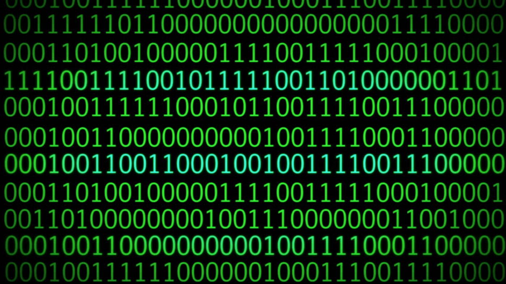

Bij een binair stelsel zijn er alleen maar twee getallen: 0 en 1. je kan deze getallen combineren om meer getallen te maken met machten van 2 bijvoorbeeld: 1 = 00000001 2 = 00000010 3 = 00000011 4 = 00000100 5 = 00000101 128 = 10000000 255 = 11111111 het gaat zo door tot en met 255
